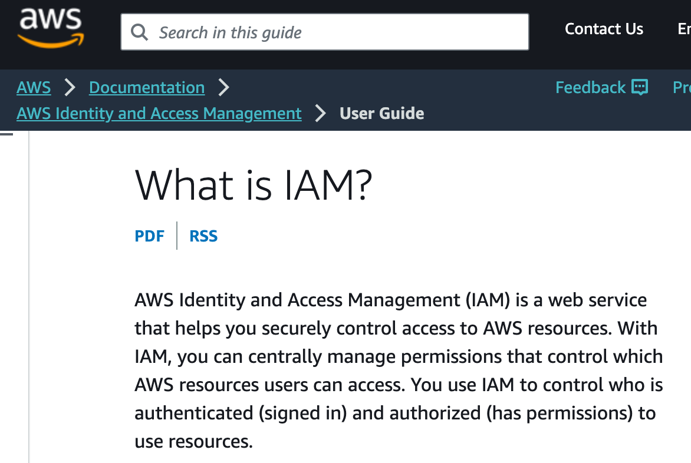

Using the AWS command line interface to launch an EC2 server
![]()

Photo by Nathan Waters
1 Introduction
The goal of this post is to provide a straightforward solution to quickly getting a secure AWS EC2 server up and running.
This post follows a separate post (here) where we discuss setting up a virtual server on Amazon Web Services (AWS) using the interactive Elastic Compute Cloud (EC2) dashboard. While its definitely instructive to use the EC2 console interface to set up a work environment and launch a custom server, it can become a tedious process after the first few repetitions. In this post we’ll present bash shell scripts to perform the same task, making use of the AWS command line interface (CLI).
To get started: on your mac workstation, install and configure the aws cli app via the commands: (commands issued at the shell prompt are prefaced with a right arrow > )
> brew install awscli
> aws configure Instructions to install the homebrew system on a mac can be found (here) The app will open a dialog asking for your IAM credentials. If you don’t have an IAM ID, Appendix 1 (here) provides details on obtaining IAM credentials from your AWS account.
Additional instructions from Amazon for installing the AWS CLI can be found (here).
2 Scripts
Nine parameters (besides the IAM ID) are required to be set for automated instance (server) generation. The first eight are likely to be static and we suggest you “hardcode” them in the scripts or assign them as environment variables in your shell configuration file, e.g. .zshrc.
An example follows:
Parameters 1) and 2) vpc_id and subnet_id are determined by user’s location and can be found on the EC2 dashboard.
export vpc_id="vpc-14814b73"
export subnet_id="subnet-f02c90ab"Parameters 3), 4) and 5) ami_id, storage_size and instance_type define the OS and capabilities of the server
export ami_id="ami-014d05e6b24240371"
export instance_type="t2.micro"
export storage_size="30"Parameters 6) and 7) key_name and security_grp identify the ssh key-pair and the firewall:
export key_name="power1_app"
export security_grp="sg-0fef542d93849669c"Parameter 8) is the static_ip that identifies the server on the web:
export static_ip="13.57.139.31"Below we offer four bash scripts.
The first creates a key pair to allow encrypted ssh communication between the server and your workstation.
The second generates a security group for the virtual server, i.e. a firewall.
The third script generates the virtual server taking physical server location, instance characteristics, firewall, static IP and domain name as parameters.
The fourth script installs required software following server launch.
2.1 Create security group script
Generate security group: `
Example:
> aws_create_security_group_rapid.sh -s power1_appThis version of the script creates a security group with open ports: 22, 80, 443, 3838, 9000, and 9001.
#!/usr/bin/env bash
# latest edit 2023-08-06 12:21:38
# The script generates a new security group
# the group name is given with the -s flag.
# ports 22, 80, 3838 and 443 are options. use flags h,i,j,k respectively.
# Will fail if group name is already in use.
# reads vpc_id from the environment variables set in .zshrc
# example usage:
# aws_create_security_group.sh -s power1_app -h y -i y -j y -k y
while getopts s:h:i:j:k: flag
do
case "${flag}" in
s) sg_grp_name=${OPTARG};;
esac
done
base=`basename $PWD`
if [ -z "$sg_grp_name" ]
then
proj_name=$base
fi
aws ec2 create-security-group \
--group-name $sg_grp_name \
--description "base security group" \
--tag-specifications \
"ResourceType=security-group,Tags=[{Key=Name,Value=$sg_grp_name}]" \
--vpc-id $vpc_id > temp.txt
wait
security_grp_id=`jq -r .GroupId temp.txt`
wait
echo "security group ID = $security_grp_id"
echo $security_grp_id
aws ec2 authorize-security-group-ingress \
--group-id $security_grp_id \
--protocol tcp \
--port 22 \
--cidr "0.0.0.0/0"
aws ec2 authorize-security-group-ingress \
--group-id $security_grp_id \
--protocol tcp \
--port 443 \
--cidr "0.0.0.0/0"
aws ec2 authorize-security-group-ingress \
--group-id $security_grp_id \
--protocol tcp \
--port 80 \
--cidr "0.0.0.0/0"
aws ec2 authorize-security-group-ingress \
--group-id $security_grp_id \
--protocol tcp \
--port 3838 \
--cidr "0.0.0.0/0"
aws ec2 authorize-security-group-ingress \
--group-id $security_grp_id \
--protocol tcp \
--port 9000 \
--cidr "0.0.0.0/0"
aws ec2 authorize-security-group-ingress \
--group-id $security_grp_id \
--protocol tcp \
--port 9001 \
--cidr "0.0.0.0/0" 2.2 Create new key pair with a project name flag
Example usage: Note run with one parameter for optional keypair name.
> aws_create_keypair.sh -p $key_name
#!/usr/bin/env bash
base=`basename $PWD`
if [ -z "$1" ]
then
key_pair_name=$base
else
key_pair_name="$1"
fi
echo "key_pair_name is $key_pair_name"
read -p "Continue (y/n)?" CONT
if [ "$CONT" = "y" ]; then
echo "Here we go!";
else
echo "too bad. bye."; exit;
fi
cd ~/.ssh
rm -f ~/.ssh/$key_pair_name.pem
aws ec2 create-key-pair --key-name $key_pair_name \
--query 'KeyMaterial' --output text > ~/.ssh/$key_pair_name.pem
wait
chmod 600 ~/.ssh/$key_pair_name.pem2.3 Generate instance
start up script. aws_create_instance.sh
#!/usr/bin/env bash
while getopts s:t:k:p: flag
do
case "${flag}" in
s) size=${OPTARG};;
t) type=${OPTARG};;
k) key_name=${OPTARG};;
p) proj_name=${OPTARG};;
esac
done
base=`basename $PWD`
if [ -z "$proj_name" ]
then
proj_name=$base
fi
if [ -z "$type" ]
then
type="t2.micro"
fi
if [ -z "$size" ]
then
size=30
fi
echo "Review parameters: "
echo "---"
echo "proj_name is $proj_name"
echo "key_name is $key_name"
echo "vpc_id: $vpc_id";
echo "subnet_id: $subnet_id";
echo "ami_id: $ami_id";
echo "security_grp: $security_grp";
echo "static_ip: $static_ip";
echo "type: $type";
echo "size: $size";
read -p "Review Notes (y/n)?" NOTES
if [ "$NOTES" = "y" ]; then
echo "Notes on currect parameters:"
echo "security group should be in place already. check on EC2.
If not, run ./awscli_create_security.sh.
Key pair should be in place. check in ~/.ssh.
If not run ./create_keypair.sh.
ami id is for ubuntu linux 22.04 LTS.
If not what is desired check EC2 list of instances.
Check static IP: nslookup IPaddress. Should point to the domain name e.g. rgtlab.org ";
else
echo "I guess you know what you're doing";
fi
read -p "Continue (y/n)?" CONT
if [ "$CONT" = "y" ]; then
echo "Here we go!";
else
echo "too bad. bye."; exit;
fi
#cd ~/.ssh
#rm -f ~/.ssh/$proj_name.pem
#aws ec2 create-key-pair --key-name $proj_name \
# --query 'KeyMaterial' --output text > ~/.ssh/$proj_name.pem
#
#wait
#chmod 600 ~/.ssh/$proj_name.pem
aws ec2 run-instances \
--image-id $ami_id \
--count 1 \
--instance-type $type \
--key-name $key_name \
--security-group-ids $security_grp \
--subnet-id $subnet_id \
--block-device-mappings "[{\"DeviceName\":\"/dev/sda1\",\"Ebs\":{\"VolumeSize\":$size}}]" \
--tag-specifications "ResourceType=instance,Tags=[{Key=Name,Value=$proj_name}]" \
--user-data file://~/Dropbox/prj/c060/aws_startup_code.sh
#
# wait
iid0=`aws ec2 describe-instances --filters "Name=tag:Name,Values=$proj_name" | \
jq -r '.Reservations[].Instances[].InstanceId'`
echo $iid0
# aws ec2 wait instance-running --instance-ids $iid
# echo "the generated instance has ID: $iid"
# running=`aws ec2 describe-instance-status --instance-id $iid
# echo "the instance status is $running"
read -p "enter instance id:" iid
echo "instance id: $iid"
aws ec2 associate-address --public-ip $static_ip --instance-id $iid
#wait
#ssh -o "StrictHostKeyChecking no" rgtlab.org \
#'cd docker_compose_power1_app; sudo docker compose up -d'aws_startup.sh
#!/bin/bash
apt update
# apt upgrade
apt-get install curl -y
apt-get install gnupg -y
apt-get install ca-certificates -y
apt-get install lsb-release -y
sudo install -m 0755 -d /etc/apt/keyrings
curl -fsSL https://download.docker.com/linux/ubuntu/gpg | \
sudo gpg --dearmor -o /etc/apt/keyrings/docker.gpg
sudo chmod a+r /etc/apt/keyrings/docker.gpg
### Add Docker and docker compose support to the Ubuntu's packages list
echo \
"deb [arch="$(dpkg --print-architecture)" \
signed-by=/etc/apt/keyrings/docker.gpg] \
https://download.docker.com/linux/ubuntu \
"$(. /etc/os-release && echo "$VERSION_CODENAME")" stable" | \
sudo tee /etc/apt/sources.list.d/docker.list > /dev/null
apt-get update
### Install docker and docker compose on Ubuntu
apt-get install docker-ce docker-ce-cli containerd.io docker-compose-plugin -y
apt install neovim -y
apt install exa trash-cli ripgrep -y
apt install zsh -y
curl -fLo ~/.vim/autoload/plug.vim --create-dirs \
https://raw.githubusercontent.com/junegunn/vim-plug/master/plug.vim
su ubuntu -
usermod -aG docker ubuntu
sudo chsh -s $(which zsh)
# install oh my zsh, with zsh-z and zsh-autosuggestions plugins
sh -c "$(curl -fsSL
https://raw.githubusercontent.com/ohmyzsh/ohmyzsh/master/tools/install.sh)" \
"" --unattended
echo "alias lt='exa -lrFha -sold'" >> .zshrc
echo "alias tp='trash-put -v'" >> .zshrc
git clone https://github.com/zsh-users/zsh-autosuggestions \
${ZSH_CUSTOM:-~/.oh-my-zsh/custom}/plugins/zsh-autosuggestions
git clone https://github.com/MichaelAquilina/zsh-you-should-use.git \
$ZSH_CUSTOM/plugins/you-should-useFor convenience, construct a config file in ~/.ssh as:
Host rgtlab.org
HostName 13.57.139.31 # static IP
User ubuntu # default user on ubuntu server
Port 22 # the default port ssh uses
IdentityFile ~/.ssh/power1_app.pemthen we can ssh into the new server with
sh> ssh rgtlab.orgChange the access permissions: sudo chmod 600 power1ssh.pem to be more restrictive.
2.4 Appendix 1 Set up AWS IAM
This appendix provides details on how to initiate batch processing via the AWS CLI desktop application. Start by launching the aws configure program.
From aws web site:
“AWS Identity and Access Management (IAM) is a web service that helps you securely control access to AWS resources.”

Log into the AWS console.
Search for IAM service. Navigate to IAM dashboard.
Select User groups. Create a user group based on the Power User profile.
Call it poweruser. Include zenn in the poweruser group.
Select Users in left hand panel.
Then select Create User button (in upper right).
Then enter a User name in the form, say zenn. Click Next (lower right)
Then Create User.
Click on the user name
In the page that comes up. Select Security Credentials tab (center of page).
Under Access Keys panel click Create access key (left side or bottom of panel).
Click Command Line Interface CLI
and at the bottom of the page click the checkbox “I understand…”.
Finally select Create access key and
choose Download .csv file (lower right).
Navigate Download screen to local ~/.aws directory.(may need shift-cmd-. on mac)
Click Done
Now in the terminal on your workstation, configure the aws cli app via the command.
> aws configure Using cut and paste enter info from the credentials file just downloaded. After entering the AWS Access Key ID and AWS Secret Access Key information you are asked for a Region, (my region is us-west-1), and an output format (suggested output format is JSON).
3 Sample work session
Start from scratch. Assume the following:
aws cliis configured.- no security group has been defined
- no key pair has been generated
vpc IDandsubnet IDknown and stored as environment variables.- project name is
power1_app
In the following we’ll spin up a ubuntu server (AMI) with type t2-micro (1 vCPU and 1gb memory) and 30 GB (size) hard drive.
step 1. generate security group named power1_app, and get the SG ID from the script output and store it as an environment variable.
Note
2023-10-24 17:25:06
compare code from
aws_create_security_group.sh
and
aws_create_security_group_rapid.sh
> aws_create_security_group.sh
> echo "export subnet_id='sg-0fda72c2879d6b2ad'" >> ~/.zshrcstep 2. add key pair with name power1_app
aws_create_keypair.sh power1_appstep 3. get a new elastic IP address and add it to z-shell configuration file. and modify ssh config file to add the IP address and the ssh private key name. if new IP is: 204.236.167.50
echo "export static_ip='204.236.167.50'" >> ~/.zshrcGenerate instance: aws_create_instance.sh -p power1_app
sed -i '.bak' '/HostName/d' config
sed -i '.bak' '/Ide/d' config
echo "HostName 204.236.167.50" >> ~/.ssh/config
echo "IdentityFile ~/.ssh/power1_app.pem" >> ~/.ssh/config
scp -i "~/.ssh/power1_app.pem" -r ~/prj/c060/docker_compose_power1_app/ \
ubuntu@rgtlab.org:~
ssh rgtlab.org
cd docker_compose_power1_app/
sudo docker-compose up -d4 Appendix 2 Undo
- To remove the AWS instance and Gitlab elements of project do the following:
- log into AWS/EC2 console
- Terminate instance
- delete security group
- release IP address
- delete SSH key pair
- Log into Gitlab
- Delete project(s) settings/General/advanced
Reuse
Citation
@online{(ryy)glennthomas2023,
author = {Ronald (Ryy) Glenn Thomas},
title = {Using the {AWS} Command Line Interface to Launch an {EC2}
Server},
date = {2023-10-24},
url = {https://focusonr.org/blog/server_setup_aws_cli},
langid = {en}
}